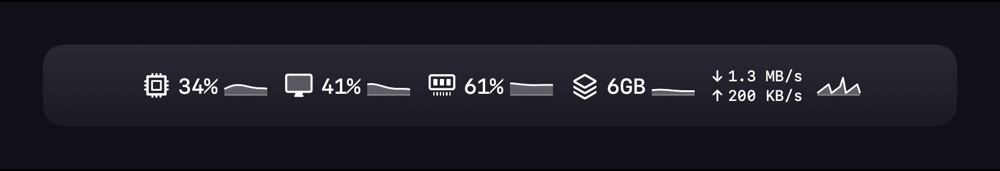
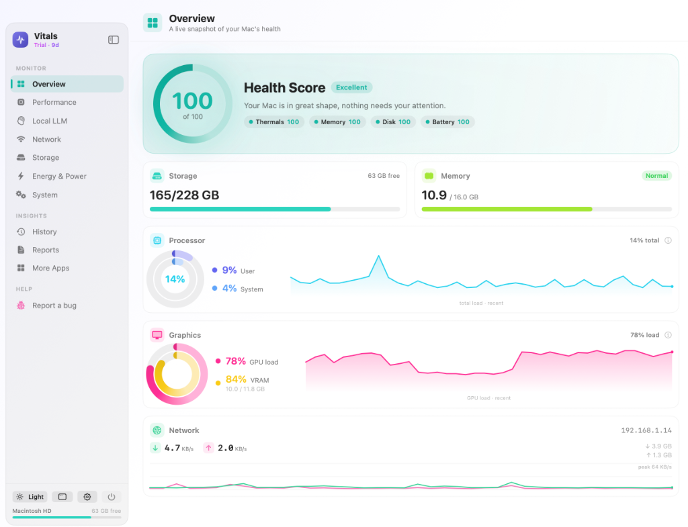
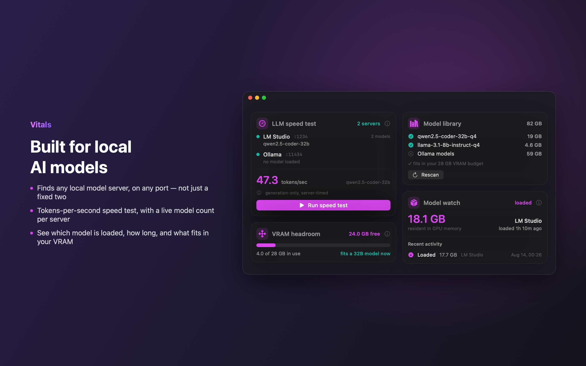
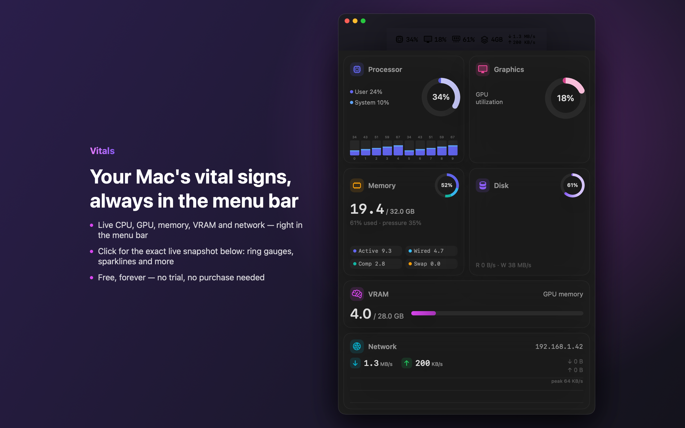
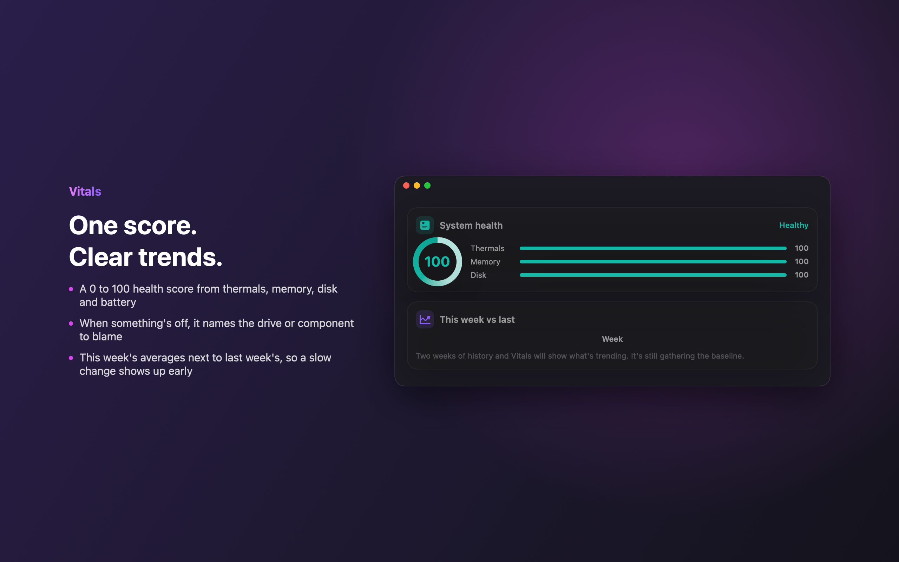
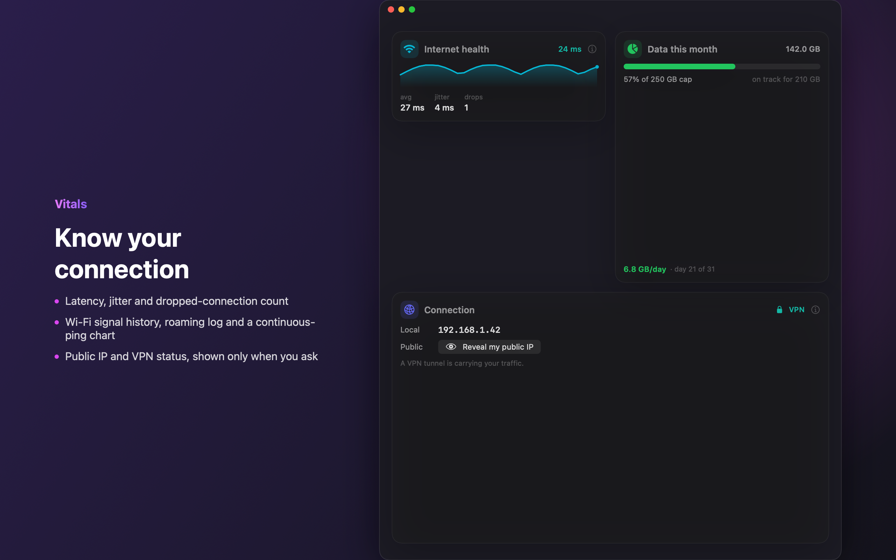
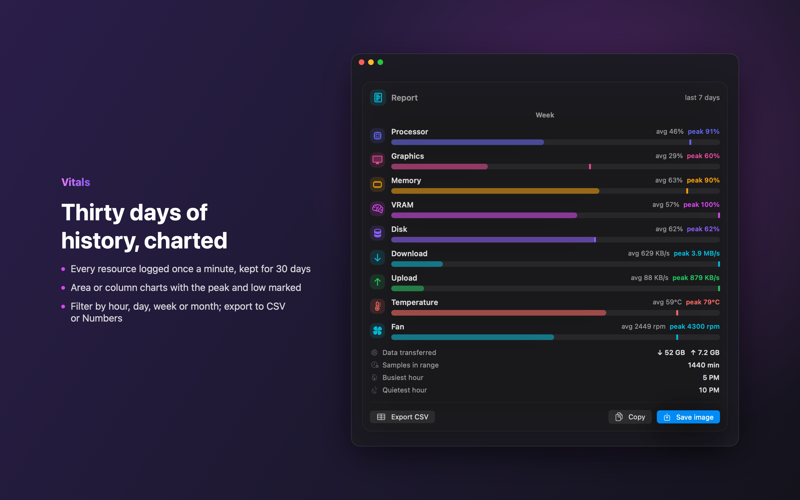
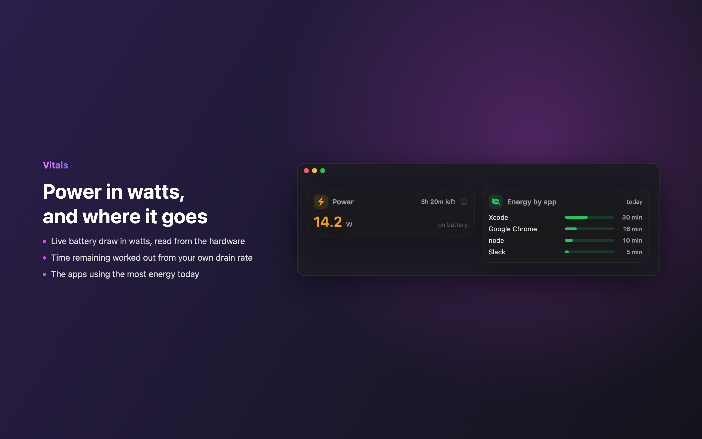
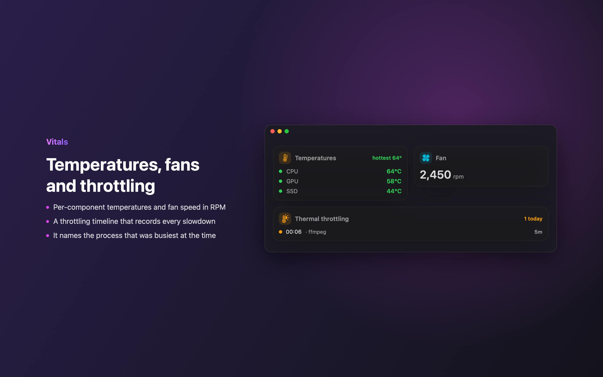
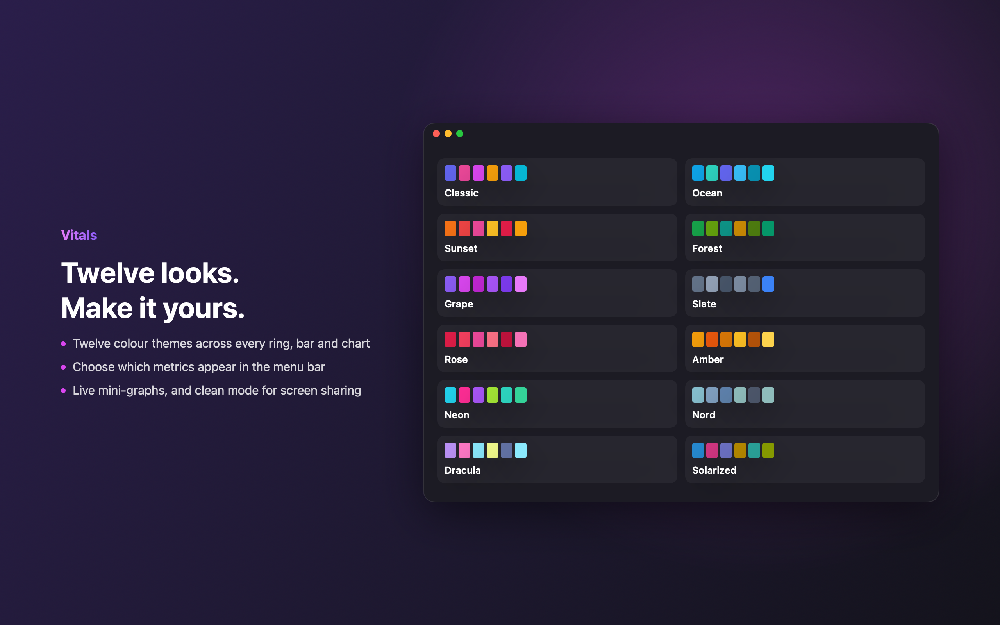

Your Mac's vital signs, in the menu bar.
A lightweight, native macOS monitor that watches CPU, GPU, memory, network, heat, battery and Bluetooth devices — plus tools no other menu-bar app has: live local-LLM detection & speed tests, 30-day history, and plain-English crash & panic alerts.
macOS 13+ · free 14-day trial · one-time $9.99 after · no subscription · nothing leaves your Mac
The same dual rings and live telemetry Vitals draws — shown here with live sample data.

The whole machine, one window
A dashboard for every part of your Mac.

Everything you want to know
One glance. The whole machine.
From a tidy menu-bar readout to a deep, chart-rich dashboard — Vitals shows you what's happening and what it means.
Menu-bar vitals
Just the Vitals mark by default — clean and unobtrusive. Add live CPU, GPU, RAM & network readouts with mini-graphs whenever you want. Click for a rich popover snapshot.
Local-LLM tools
Auto-detects Ollama, LM Studio, llama.cpp & more on any port. Runs real tokens/sec speed tests and shows VRAM headroom.
30-day history
Every metric charted over a month, searchable — with weekly reports you can export to CSV.
Heat, fans & health
Per-component temperatures, fan speeds, thermal throttling detection and S.M.A.R.T. disk health.
Crash & panic watch
Surfaces app crashes and kernel panics with a plain-English explanation of what actually happened.
Live desktop widget
A floating, always-on-top panel that updates every second — not on a slow schedule. Drag it anywhere, expand it to the full dashboard, or jump to the overview window in one click.
Bluetooth & peripherals
Battery level for your connected keyboard, mouse, trackpad and headphones, right alongside your Mac's own battery.
Smart alerts
Customizable threshold alerts, with an optional push to your iPhone the moment something needs attention.
Deep customization
Twelve themes, full menu-bar layout control, and a live desktop widget that matches how you like to work.
Built for the local-AI era.
Running models on your own Mac? Vitals finds every local inference server automatically — named or not, on any port — and tells you what's actually running and how fast.
- ✓Detects Ollama, LM Studio, llama.cpp, vLLM, Jan, GPT4All, KoboldCpp and more.
- ✓One-tap speed test reports real tokens/second — the number people actually compare models by.
- ✓Watches VRAM headroom and loaded-model details while you work.
- ✓All local. It talks only to servers already on your machine — nothing is uploaded.

A closer look
Depth when you want it.







Simple, honest pricing
Free to monitor. 14 days free to go deep.
Use the menu-bar readout, popover and live desktop widget free, forever. Try every single Pro feature free for 14 days — no card required. Keep it with one $9.99 purchase, once, ever.
Free
- ✓Live menu-bar readout (CPU, RAM, network)
- ✓Rich popover snapshot & Overview
- ✓Live, always-on-top desktop widget
- ✓Twelve themes
- ✓Full Pro access for your first 14 days
Vitals Pro
- ✓Everything in Free, plus…
- ✓Full performance dashboard (per-core, memory pressure)
- ✓Local-LLM tools, speed tests & VRAM
- ✓Network tools, thermals, fans & S.M.A.R.T.
- ✓Bluetooth device battery & deep menu-bar customization
- ✓30-day history, reports & CSV export
- ✓Crash/panic watch, alerts, anomaly detection & iPhone push
- ✓All future Pro features included
What happens on your Mac, stays on your Mac.
Vitals has no account, no sign-in and no analytics. It reads your system locally and talks to nothing but the servers already running on your machine. Your data is never collected, stored off-device, or sold.
Know your Mac.
Native, lightweight, and free to try — no card, no account, no subscription.
Requires macOS 13 Ventura or later. Universal (Apple Silicon & Intel).